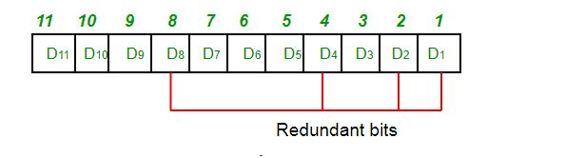
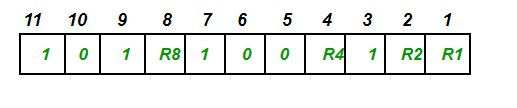
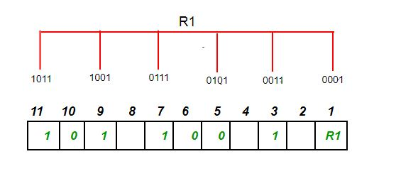
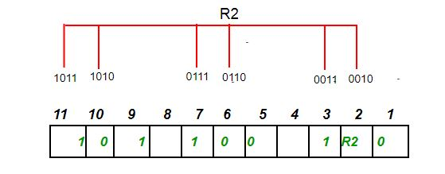
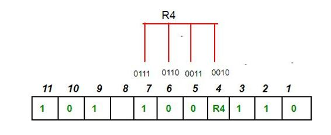
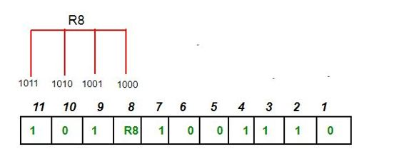
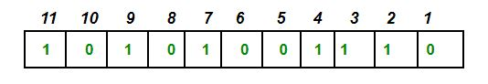
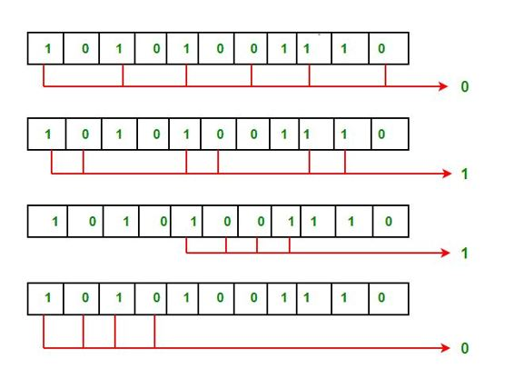

Hamming code is a set of error-correction codes that can be used to detect and correct the errors that can occur when the data is moved or stored from the sender to the receiver. It is technique developed by R.W. Hamming for error correction.
Redundant bits –
Redundant bits are extra binary bits that are generated and added to the information-carrying bits of data transfer to ensure that no bits were lost during the data transfer.
The number of redundant bits can be calculated using the following formula:
2^r > m + r + 1 where, r = redundant bit, m = data bit
Suppose the number of data bits is 7, then the number of redundant bits can be calculated using:
= 2^4 > 7 + 4 + 1
Thus, the number of redundant bits= 4
Parity bits –
A parity bit is a bit appended to a data of binary bits to ensure that the total number of 1’s in the data are even or odd. Parity bits are used for error detection. There are two types of parity bits:
- Even parity bit:
In the case of even parity, for a given set of bits, the number of 1’s are counted. If that count is odd, the parity bit value is set to 1, making the total count of occurrences of 1’s an even number. If the total number of 1’s in a given set of bits is already even, the parity bit’s value is 0. - Odd Parity bit –
In the case of even parity, for a given set of bits, the number of 1’s are counted. If that count is even, the parity bit value is set to 1, making the total count of occurrences of 1’s an odd number. If the total number of 1’s in a given set of bits is already odd, the parity bit’s value is 0.
General Algorithm of Hamming code –
The Hamming Code is simply the use of extra parity bits to allow the identification of an error.
- Write the bit positions starting from 1 in binary form (1, 10, 11, 100, etc).
- All the bit positions that are a power of 2 are marked as parity bits (1, 2, 4, 8, etc).
- All the other bit positions are marked as data bits.
- Each data bit is included in a unique set of parity bits, as determined its bit position in binary form.
a. Parity bit 1 covers all the bits positions whose binary representation includes a 1 in the least significant
position (1, 3, 5, 7, 9, 11, etc).
b. Parity bit 2 covers all the bits positions whose binary representation includes a 1 in the second position from
the least significant bit (2, 3, 6, 7, 10, 11, etc).
c. Parity bit 4 covers all the bits positions whose binary representation includes a 1 in the third position from
the least significant bit (4–7, 12–15, 20–23, etc).
d. Parity bit 8 covers all the bits positions whose binary representation includes a 1 in the fourth position from
the least significant bit bits (8–15, 24–31, 40–47, etc).
e. In general each parity bit covers all bits where the bitwise AND of the parity position and the bit position is
non-zero. - Since we check for even parity set a parity bit to 1 if the total number of ones in the positions it checks is
odd. - Set a parity bit to 0 if the total number of ones in the positions it checks is even.
Determining the position of redundant bits –
These redundancy bits are placed at the positions which correspond to the power of 2.
As in the above example:
- The number of data bits = 7
- The number of redundant bits = 4
- The total number of bits = 11
- The redundant bits are placed at positions corresponding to power of 2- 1, 2, 4, and 8

Suppose the data to be transmitted is 1011001, the bits will be placed as follows:

Determining the Parity bits –
- R1 bit is calculated using parity check at all the bits positions whose binary representation includes a 1 in the least significant position.
R1: bits 1, 3, 5, 7, 9, 11

To find the redundant bit R1, we check for even parity. Since the total number of 1’s in all the bit positions corresponding to R1 is an even number the value of R1 (parity bit’s value) = 0
- R2 bit is calculated using parity check at all the bits positions whose binary representation includes a 1 in the second position from the least significant bit.
R2: bits 2,3,6,7,10,11

To find the redundant bit R2, we check for even parity. Since the total number of 1’s in all the bit positions corresponding to R2 is an odd number the value of R2(parity bit’s value)=1
- R4 bit is calculated using parity check at all the bits positions whose binary representation includes a 1 in the third position from the least significant bit.
R4: bits 4, 5, 6, 7

To find the redundant bit R4, we check for even parity. Since the total number of 1’s in all the bit positions corresponding to R4 is an odd number the value of R4(parity bit’s value) = 1
- R8 bit is calculated using parity check at all the bits positions whose binary representation includes a 1 in the fourth position from the least significant bit.
R8: bit 8,9,10,11

To find the redundant bit R8, we check for even parity. Since the total number of 1’s in all the bit positions corresponding to R8 is an even number the value of R8(parity bit’s value)=0.
Thus, the data transferred is:

Error detection and correction –
Suppose in the above example the 6th bit is changed from 0 to 1 during data transmission, then it gives new parity values in the binary number:
‘
The bits give the binary number as 0110 whose decimal representation is 6. Thus, the bit 6 contains an error. To correct the error the 6th bit is changed from 1 to 0.